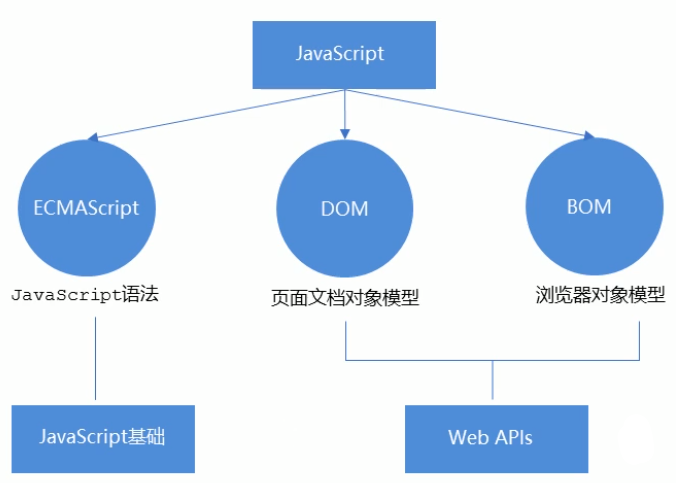
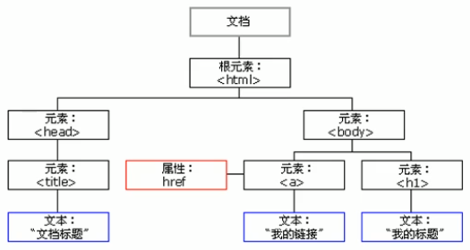

初识JavaScript
JavaScript是什么
- javascript是一种运行在客户端的脚本语言
- 脚本语言：不需要编译，运行过程中由js解释器(js引擎)逐行进行解释并执行
- 现在也可以基于Node.js技术进行服务器端编程
JavaScript的作用
- 表单动态校验(密码强度检测)(js产生最初的目的)
- 网页特效
- 服务端开发(Node.js)
- 桌面程序(Electron)
- App(Cordova)
- 控制硬件-物联网(Ruff)
- 游戏开发(cocos2d-js)
HTML/CSS/JS的关系
HTML/CSS标记语言--描述类语言
- HTML决定网页结构和内容(决定看到什么)，相当于人的身体
- CSS决定网页呈现给用户的模样(决定好不好看)，相当于给人穿衣服、化妆
JS脚本语言--编程类语言
实现业务逻辑和页面控制(决定功能)，相当于人的各种动作
浏览器执行JS简介
浏览器分成两部分：渲染引擎和JS引擎
- 渲染引擎：用来解析HTML与CSS，俗称内核，比如chrome浏览器的blink，老版本的webkit
- JS引擎：也称为JS解释器。用来读取网页中的javascript代码，对其处理后运行，比如chrome浏览器的V8
浏览器本身并不会执行JS代码，而是通过内置JavaScript引擎(解释器)来执行JS代码。JS引擎执行代码时逐行解释每一句源码(转换为机器语言)，然后由计算机去执行，所以JavaScript语言归为脚本语言，会逐行解释执行
JS的组成

- ECMAScript是由ECMA国际(原欧洲计算机制造商协会)进行标准化的一门编程语言，这种语言在万维网上应用广泛，它往往被称为JavaScript或JScript，但实际上后两者是ECMAScript语言的实现和扩展

ECMAScript:规定了JS的编程语法和基础核心知识，是所有浏览器厂商共同遵守的一套JS语法工业标准。
- DOM——文档对象模型
文档对象模型(Document Object Model，简称DOM)，是W3C组织推荐的处理可扩展标记语言的标准编程接口。通过DOM提供的接口可以对页面上的各种元素进行操作(大小、位置、颜色等)
- BOM——浏览器对象模型
BOM(Browser Object Model，简称BOM)是指浏览器对象模型，它提供了独立于内容的、可以与浏览器窗口进行互动的对象结构。通过BOM可以操作浏览器窗口，比如弹出框、控制浏览器跳转、获取分辨率等
JS初体验
JS有三种书写位置，分别为行内、内嵌和外部
- 行内式JS
1<input type="button" value="点我试试" onclick="alert('Hello World')" />(1)可以将单行或少量JS代码写在HTML标签的事件属性中(以on开头的属性)，如:onclick
(2)注意单双引号的使用：在HTML中推荐使用双引号，JS中推荐使用单引号
(3)可读性差，在html中编写JS大量代码时，不方便阅读
(4)引号易错，引号多层嵌套匹配时，非常容易弄混
(5)特殊情况下使用
- 内嵌JS
xxxxxxxxxx31<script>2 alert('Hello World!'); 3</script> (1)可以将多行JS代码写到<script>标签中
(2)内嵌JS是学习时常用的方式
- 外部JS文件
xxxxxxxxxx11<script src="my.js"></script> (1)利用HTML页面代码结构化，把大段JS代码独立到HTML页面之外，既美观，也方便文件级别的复用
(2)引用外部JS文件的script标签中间不可以写代码
(3)适合于JS代码量比较大的情况
注释快捷键
单行注释 ctrl + /
多行注释 shift + alt + a(默认) vscode中修改多行注释的快捷键 ctrl + shift + /
JavaScript输入输出语句
为了方便信息的输入输出，JS中提供了一些输入输出语句，其常用的语句如下：
| 方法 | 说明 | 归属 |
|---|---|---|
alert(msg); | 浏览器弹出警示框 | 浏览器 |
console.log(msg); | 浏览器控制台打印输出信息 | 浏览器 |
prompt(info); | 浏览器弹出输入框，用户可以输入 | 浏览器 |
变量
变量：用于存放数据的容器，通过变量名获取数据，甚至数据可以修改
本质：变量是程序在内存中申请的一块用来存放数据的空间
变量在使用时分为两步：1.声明变量 2.赋值
声明变量
xxxxxxxxxx11var age;var是一个JS关键字，用来声明变量(variable变量的意思)。使用该关键字声明变量后，计算机会自动为变量分配内存空间- age是程序员定义的变量名，要通过变量名来访问内存中分配的空间
xxxxxxxxxx11var age = 18;声明一个变量并赋值，称之为变量的初始化
变量语法扩展
- 更新变量
一个变量被重新赋值后，它原有的值就会被覆盖，变量值将以最后一次赋的值为准
- 同时声明多个变量
同时声明多个变量时，只需要写一个var，多个变量名之间使用英文逗号隔开
xxxxxxxxxx11var age = 10, name = 'wz', sex = 2;- 声明变量的特殊情况
| 情况 | 说明 | 结果 |
|---|---|---|
var age; console.log(age); | 只声明 不赋值 | undefined |
console.log(age); | 不声明 不赋值 直接使用 | 报错 |
age = 10; console.log(age); | 不声明 只赋值 | 10 |
变量命名规范
- 由字母(A-Z,a-z)、数字(0-9)、下划线(_)、美元符号($)组成，如：usrAge,num01,__name
- 严格区分大小写，var app;和var App;是两个变量
- 不能以数字开头，18age 是错误的
- 不能是关键字、保留字。例如var、for、while
- 变量名必须有意义。MMD BBD
- 遵守驼峰命名法。首字母小写，后面单词的首字母需要大写。myFirstName
数据类型
变量的数据类型
变量是用来存储值的所在处，有名字和数据类型。变量的数据类型决定了如何将代表这些值的位存储到计算机的内存中。JavaScript是一种弱类型或者说动态语言。这意味着不用提前声明变量的类型，在程序运行过程中，类型会被自动确定。
xxxxxxxxxx21var age = 10;2var str = 'abc';在代码运行时，变量的数据类型是由JS引擎根据=右边变量值的数据类型来判断的，运行完毕之后，变量就确定了数据类型。
JavaScript拥有动态类型，同时也意味着相同的变量可用作不同的类型
xxxxxxxxxx21var x = 6;2x = 'Bill';数据类型的分类
JS把数据类型分为两类：
- 简单数据类型(
Number,String,Boolean,Undefined,Null) - 复杂数据类型(
object)
| 简单数据类型 | 说明 | 默认值 |
|---|---|---|
Number | 数字型，包含整型值和浮点型值，如21、0.21 | 0 |
Boolean | 布尔值类型，如true、false，等价于1和0 | false |
String | 字符串类型，注意JS里面，字符串都带引号 | '' |
Undefined | var a; 声明了变量a，但是没有给值，此时a = undefined | undefined |
Null | var a = null; 声明了变量a为空值 | null |
数字型Number
- 数字型进制
最常见的进制有二进制、八进制、十进制、十六进制
xxxxxxxxxx61// 1. 八进制 0 ~ 7 程序里面数字前面加0 表示八进制2var num1 = 010;3console.log(num1);4// 2. 十六进制 0 ~ 9 a ~ f 数字的前面加0x表示十六进制5var num3 = 0x9a;6console.log(num3)在JS中八进制前面加0，十六进制前面加0x
- 数字型范围
JavaScript中数值的最大和最小值
xxxxxxxxxx41// 3.数字型的最大值2console.log(Number.MAX_VALUE); // 1.7976931348623157e+3083// 4. 数字型的最小值4console.log(Number.MIN_VALUE); // 5e-324- 数字型的三个特殊值
xxxxxxxxxx61// 5. 无穷大2console.log(Number.MAX_VALUE * 2); // Infinity 无穷大3// 6. 无穷小4console.log(-Number.MAX_VALUE * 2); // -Infinity 无穷小5// 7. 非数字6console.log('abc' - 100); // NaN- Infinity,代表无穷大，大于任何数值
- -Infinity,代表无穷小，小于任何数值
- NaN，Not a number,代表一个非数值
- isNaN()
这个方法用来判断非数字 并且返回一个值 如果是数字返回的是false 如果不是数字返回的是true
字符串型 String
字符串型可以是引号中的任意文本，其语法为双引号""和单引号''
- 字符串引号嵌套
JS可以用单引号嵌套双引号，或者用双引号嵌套单引号(外双内单，外单内双)
xxxxxxxxxx21var strMsg = 'abc"de"fgh';2var strMsg2 = "abc'de'fgh";- 字符串转义符
类似HTML中的特殊字符，字符串中也有特殊字符，称之为转义符
转义符都是\开头的，常用的转义符及其说明如下：
| 转义符 | 解释说明 |
|---|---|
\n | 换行符， n 是 newline 的意思 |
\\ | 斜杠 \ |
\' | ' 单引号 |
\" | " 双引号 |
\t | tab 缩进 |
\b | 空格 ， b 是 blank的意思 |
- 字符串长度
字符串是由若干个字符组成的，这些字符的数量就是字符串的长度，通过字符串的length属性可以获取整个字符串的长度
- 字符串拼接
- 多个字符串之间可以使用
+进行拼接，其拼接方式为字符串 + 任何类型 = 拼接之后的新字符串 - 拼接前会把与字符串相加的任何类型转成字符串，再拼接成一个新的字符串
- 字符串拼接加强
- 经常会将字符串和变量来拼接，因为变量可以很方便地修改里面地值
- 变量是不能添加引号的，因为加引号的变量会变成字符串
布尔型 Boolean
布尔类型有两个值：true和false，其中true表示真，而false表示假
布尔型和数字型相加时，true的值为1，false的值为0
Undefined和Null
一个声明后没有被赋值的变量会有一个默认值undefined(如果进行相连或者相加时，注意结果)
xxxxxxxxxx31var variable = undefined;2console.log(variable + 'pink'); // undefinedpink3console.log(variable + 1); // NaN一个声明变量给null值，里面存的值为空
xxxxxxxxxx31var space = null;2console.log(space + 'pink'); // nullpink3console.log(space + 1); // 1简单数据类型null 返回的是一个空的对象 object
xxxxxxxxxx21var timer = null;2console.log(typeof timer); // object如果有个变量以后打算存储为对象，但是暂时没想好放啥，这个时候就给null
获取检测变量的数据类型
typeof可用来获取检测变量的数据类型
xxxxxxxxxx41var num = 10;2console.log(typeof num); // number3var str = 'pink';4console.log(typeof str); // string- 字面量
字面量是在源代码中一个固定值的表示法，通俗来说，就是字面量表示如何表达这个值
- 数字字面量：8，9，10
- 字符串字面量：'南京'，"长沙"
- 布尔字面量：true，false
数据类型转换
使用表单、prompt获取过来的数据默认是字符串类型的，此时就不能简单的进行加法运算。而需要转换变量的数据类型。通俗来说，就是把一种数据类型的变量转换成另外一种数据类型
通常会实现3种方式的转换：
- 转换为字符串类型
- 转换为数字型
- 转换为布尔型
转换为字符串
| 方式 | 说明 | 案例 |
|---|---|---|
toString() | 转成字符串 | var num = 1; alert(num.toString()); |
String()强制转换 | 转成字符串 | var num = 1; alert(String(num)); |
| 加号拼接字符串 | 和字符串拼接的结果都是字符串 | var num = 1; alert(num + '字符串')； |
toString()和String()使用方式不一样- 三种转换方式，更喜欢用第三种拼接字符串转换方式，这一种方式也称之为隐式转换
转换为数字型(重点)
| 方式 | 说明 | 案例 |
|---|---|---|
parseInt(string) | 将string类型转换为整数数字型 | parseInt('78') |
parseFloat(string) | 将string类型转换为浮点数字型 | parseFloat('78.21') |
Number()强制转换 | 将string类型转换为数字型 | Number('12') |
| js隐式转换(- * /) | 利用算术运算隐式转换为数字型 | '12' - 0 |
转换为布尔型
| 方式 | 说明 | 案例 |
|---|---|---|
Boolean() | 其它类型转成布尔值 | Boolean('true'); |
- 代表空、否定的值会被转换为false，如''、0、NaN、null、undefined
- 其余值都会被转换为true
运算符
算术运算符
| 运算符 | 描述 |
|---|---|
+ | 加 |
- | 减 |
* | 乘 |
/ | 除 |
% | 取余数(取模) |
浮点数值的最高精度是17位小数，但在进行算术计算时其精确度远远不如整数
xxxxxxxxxx21var result = 0.1 + 0.2; // 0.300000000000000042var res = 0.07 * 100; // 7.000000000000001所以：不要直接判断两个浮点数是否相等
表达式和返回值
表达式：是由数字、运算符、变量等以能求得数值的有意义排列方法所得的组合
简单理解：是由数字、运算符、变量等组成的式子
递增和递减运算符概述
如果需要反复给数字变量添加或减去1，可以使用递增(++)和递减(--)运算符来完成。
比较运算符
| 运算符名称 | 说明 | 案例 | 结果 |
|---|---|---|---|
== | 判等号(会转型) | 18 == '18' | true |
=== !== | 全等 要求值和数据类型都一致 | 18 == '18' | false |
逻辑运算符
短路运算(逻辑中断)
原理:当有多个表达式(值)时，左边的表达式值可以确定结果时，就不再继续运算右边的表达式的值
逻辑与短路运算：如果左边的表达式结果为真 则返回右边表达式 如果左边表达式为假，那么返回左边表达式
逻辑或
- 语法：表达式1 || 表达式2
- 如果第一个表达式的值为真，则返回表达式1
- 如果第一个表达式的值为假，则返回表达式2
xxxxxxxxxx31console.log(123 || 456); // 1232console.log(0 || 456); // 4563console.log(123 || 456 || 789); // 123赋值运算符
| 赋值运算符 | 说明 | 案例 |
|---|---|---|
= | 直接赋值 | var usrName = 'abc'; |
+=、-= | 加、减一个数后再赋值 | var age = 10; age += 5; // 15 |
*=、/=、%=* | 乘、除、取模后再赋值 | var age = 2; age *= 5; // 10 |
运算符优先级
| 优先级 | 运算符 | 顺序 |
|---|---|---|
| 1 | 小括号 | () |
| 2 | 一元运算符 | ++ -- ! |
| 3 | 算术运算符 | 先 * / % 后 + - |
| 4 | 关系运算符 | > >= < <= |
| 5 | 相等运算符 | == != === !== |
| 6 | 逻辑运算符 | 先 && 后 || |
| 7 | 赋值运算符 | = |
| 8 | 逗号运算符 | , |
- 一元运算符里面的逻辑非优先级很高
- 逻辑与比逻辑或优先级高
流程控制
主要有三种结构，分别是顺序结构、分支结构和循环结构

顺序结构
按照代码的先后顺序，依次执行
分支结构
JS语言提供了两种分支结构语句
- if语句
- switch语句
switch语句
xxxxxxxxxx111switch(表达式) {2 case value1:3 执行语句1；4 break;5 case value2:6 执行语句2；7 break;8 9 default:10 执行最后的语句；11}- 表达式常写成变量
- 表达式和value值相匹配的时候是全等，必须是值和数据类型都一致
- 如果当前的case里面没有break 则不会退出switch 而是继续执行下一个case
命名规范以及语法格式
标识符命名规范
- 变量、函数的命名必须要有意义
- 变量的名称一般用名词
- 函数的名称一般用动词
操作符规范
操作符左右两侧各保留一个空格
数组
创建数组
利用new创建数组
xxxxxxxxxx11var arr = new Array();利用数组字面量创建数组
xxxxxxxxxx21var arr = [];2var arr1 = [1,2,'abc',true];- js中数组可以同时存放不同数据类型的值
- 声明数组并赋值称为数组的初始化
- 数组的字面量是方括号{}
数组长度
arr.length
数组中新增元素
通过修改length长度新增数组元素
- 可以通过修改length长度来实现数组扩容的目的
- length属性是可读写的
通过修改索引号 追加数组元素
xxxxxxxxxx21var arr1 = ['red','green','blue'];2arr1[3] = 'pink';函数
函数使用
- 声明函数
xxxxxxxxxx31function 函数名() {2 //函数体3}- 调用函数
形参和实参
| 参数 | 说明 |
|---|---|
| 形参 | 形式上的参数 函数定义的时候 传递的参数 |
| 实参 | 实际上的参数 函数调用时传递的参数 实参是传递给形参的 |
形参和实参匹配问题
- 如果实参的个数和形参的个数一致，则正常输出结果
- 如果实参的个数多于参的个数，会取到形参的个数
- 如果实参的个数小于形参的个数，多余的形参就是没有值的变量undefined
函数返回值
如果有return 则返回的是return后面的值 如果函数没有return 则返回undefined
arguments的使用(伪数组)
当不确定有多少个参数传递的时候，可以用arguments来获取。在JavaScript中，arguments实际上是当前函数的一个内置对象。所有函数都内置了一个arguments对象，arguments对象中存储了传递的所有实参
arguments展现形式是一个伪数组，因此可以进行遍历。伪数组具有以下特点
- 具有
length属性 - 按索引方式储存数据
- 不具有数组的push，pop等方法
函数的两种声明方式
- 利用函数关键字自定义函数(命名函数)
xxxxxxxxxx11function fn() {}- 函数表达式(匿名函数)
xxxxxxxxxx11var fun = function(){};fun是变量名 不是函数名- 函数表达式声明方式跟声明变量差不多 只不过变量里面存的是值 而函数表达式里面存的是函数
- 函数表达式也可以进行传递参数
作用域
通常来说，一段程序代码中所用到的名字并不总是有效和可用的，而限定这个名字的可用性的代码范围就是这个名字的作用域。作用域的使用提高了程序逻辑的局部性，增强了程序的可靠性，减少了名字冲突。
变量作用域的分类
- 全局变量
- 局部变量
全局变量
在全局作用域下声明的变量叫做全局变量(在函数外部定义的变量)
- 全局变量在代码的任何位置都可以使用
- 在全局作用域下
var声明的变量是全局变量 - 特殊情况下，在函数内不适用
var声明的变量也是全局变量(不建议使用)
局部变量
在局部作用域下声明的变量叫做局部变量(在函数内部定义的变量)
- 局部变量只能在该函数内部使用
- 在函数内部
var声明的变量是局部变量 - 函数的形参实际上就是局部变量
全局变量和局部变量的区别
- 全局变量：在任何一个地方都可以使用，只有在浏览器关闭时才会被销毁，因此比较占内存
- 局部变量：只在函数内部使用，当其所在的代码块被执行时，会被初始化；当代码块运行结束后，就会被销毁，因此更节省内存空间
作用域链
- 只要是代码，就至少有一个作用域
- 写在函数内部的局部作用域
- 如果函数中还有函数，那么在这个作用域中就又诞生一个作用域
- 根据在内部函数可以访问外部函数变量的这种机制，用链式查找决定哪些数据能被内部函数访问，就称作作用域链
JavaScript预解析
JS代码是由浏览器中的JS解析器来执行的。JS解析器在运行JS代码的时候分为两步：预解析和代码执行
预解析：js引擎会把js里面所有的var还有function提升到当前作用域的最前面
代码执行：按照代码书写的顺序从上往下执行
预解析分为 变量预解析(变量提升) 和 函数预解析(函数提升)
变量提升 就是把所有的变量声明提升到当前作用域最前面 不提升赋值操作
函数提升 就是把所有的函数声明提升到当前作用域的最前面 不调用函数
函数表达式 调用必须写在函数表达式的下面
经典案例：
x1var num = 10;2fun();3function fun() {4 console.log(num);5 var num = 20;6}78//预解析完后9var num;10function fun() {11 var num;12 console.log(num);13 num = 20;14}15num = 10;16fun();1718//最后输出undefinedxxxxxxxxxx261f1();2console.log(c);3console.log(b);4console.log(a);5function f1() {6 var a = b = c = 9;7 console.log(a);8 console.log(b);9 console.log(c);10}11//预解析完后12function f1() {13 var a;14 a = b = c = 9;15 // 相当于 var a = 9; b = 9; c = 9;16 //集体声明 var a = 9, b = 9, c = 9;17 console.log(a);18 console.log(b);19 console.log(c);20}21f1();22console.log(c);23console.log(b);24console.log(a);2526//结果：9 9 9 9 9 a is not defined对象
对象由属性和方法组成的
- 属性：事物的特征，在对象中用属性来表示(常用名词)
- 方法：事物的行为，在对象中用方法来表示(常用动词)
创建对象的三种方式
- 利用字面量创建对象
对象字面量：就是花括号{}里面包含了表达这个具体事务(对象)的属性和方法。
xxxxxxxxxx81var obj = {2 name: 'wz',3 age: 23,4 sex: 'male',5 sayHi: function() {6 console.log('hi~');7 }8}- 利用
new Object创建对象
xxxxxxxxxx71var obj = new Object();2obj.name = 'wz';3obj.age = 18;4obj.sex = '男'；5obj.sayHi = function() {6 console.log('hi~');7}- 利用构造函数创建对象
构造函数名字首字母要大写，构造函数不需要return 就可以返回结果，调用构造函数必须使用new
xxxxxxxxxx61function Star(name, age, sex) {2 this.name = name;3 this.age = age;4 this.sex = sex;5}6var wz = new Star('wz', 18, 'male');new关键字执行过程
- new 构造函数可以在内存中创建了一个空的对象
- this 就会指向刚才创建的空对象
- 执行构造函数里面的代码 给这个空对象添加属性和方法
- 返回这个对象
使用对象
- 使用对象的属性 采用 对象名.属性名
- 调用属性还可以使用 对象名['属性名']
- 调用对象的方法 对象名.方法名()
遍历对象属性
for ... in语句用于对数组或者对象的属性进行循环操作(for in 里面的变量常用 k 或者 key)
xxxxxxxxxx91var obj = {2 name: 'wz',3 age: 23,4 sex: 'male'5}6for (var k in obj) {7 console.log(k); //得到属性名8 console.log(obj[k]); //得到属性值9}JavaScript内置对象
分为三种：自定义对象、内置对象、浏览器对象
前面两种对象是JS基础内容，属于ECMAScript;第三个浏览器对象属于JS独有的
MDN
学习一个内置对象的使用，只要学会其常用成员的使用即可，可以通过查文档学习，可以通过MDN/W3C来查询
Mozilla开发者网络(MDN)提供了有关开发网络技术(Open Web)的信息，包括HTML、CSS和万维网及HTML5应用的API
MDN：(https://developer.mozilla.org/zh-CN/)
Date()日期对象
是一个构造函数 必须使用new 来调用创建日期对象
日期格式化
| 方法名 | 说明 |
|---|---|
getFullYear() | 获取当年 |
getMonth() | 获取当月(0-11) |
getDate() | 获取当天日期 |
getDay() | 获取星期几(周日0 到周六6) |
getHours() | 获取当前小时 |
getMinutes() | 获取当前分钟 |
getSeconds() | 获取当前秒钟 |
数组对象
检测是否为数组
instanceof运算符 可以用来检测是否为数组
xxxxxxxxxx11arr instanceof ArrayArray.isArray(参数)
xxxxxxxxxx11Array.isArray(arr)添加删除数组元素的方法
| 方法名 | 说明 | 返回值 |
|---|---|---|
push(参数1...) | 末尾添加一个或多个元素，注意修改原数组 | 并返回新的长度 |
pop() | 删除数组最后一个元素，把数组长度减1 无参数、修改原数组 | 返回它删除的元素的值 |
unshift(参数1...) | 向数组的开头添加一个或更多元素，注意修改原数组 | 并返回新的长度 |
shift() | 删除数组的第一个元素，数组长度减1 无参数、修改原数组 | 并返回第一个元素的值 |
数组排序
- 翻转数组
xxxxxxxxxx11arr.reverse();- 数组排序
xxxxxxxxxx41arr.sort(function(a,b) {2 return a-b; //升序3 return b-a; //降序4});返回数组索引
indexOf(数组元素) 返回该数组元素的索引号，只返回第一个满足条件的索引号 找不到返回-1
lastIndexOf(数组元素) 从后面开始查找
数组转换为字符串
| 方法名 | 说明 | 返回值 |
|---|---|---|
toString() | 把数组转换成字符串，逗号分隔每一项 | 返回一个字符串 |
join('分隔符') | 方法用于把数组中的所有元素转换为一个字符串 | 返回一个字符串 |
数组的分隔和合并
| 方法名 | 说明 | 返回值 |
|---|---|---|
concat() | 连接两个或多个数组 不影响原数组 | 返回一个新的数组 |
slice() | 数组截取slice(begin,end) | 返回被截取项目的新数组 |
splice() | 数组删除splice(第几个开始，要删除个数) | 返回被删除项目的新数组 注意，这个会影响原数组 |
字符串对象
基本包装类型
为了方便操作基本数据类型，JavaScript提供了三个特殊的引用类型：String Number Boolean
基本包装类型就是把简单数据类型包装成为复杂数据类型，这样基本数据类型就有了属性和方法
字符串的不可变
指的是字符串本身的值不可变，虽然看上去可以改变内容，但其实是地址变了，内存中新开辟了一个内存空间
根据字符返回位置
字符串所有的方法，都不会修改字符串本身(字符串是不可变的)，操作完成会返回一个新的字符串
| 方法名 | 说明 |
|---|---|
indexOf('要查找的字符',开始的位置) | 返回指定内容在原字符串中的位置，如果找不到就返回-1，开始的位置是index索引号 |
lastIndexOf() | 从后往前找，只找第一个匹配的 |
根据位置返回字符
| 方法名 | 说明 | 使用 |
|---|---|---|
charAt(index) | 返回指定位置的字符(index字符串的索引号) | str.charAt(0) |
charCodeAt(index) | 获取指定位置处字符的ASCII码(index索引号) | str.charCodeAt(0) |
str[index] | 获取指定位置处字符 | HTML5,IE8+支持 和charAt()等效 |
字符串操作方法
| 方法名 | 说明 |
|---|---|
concat(str1,str2,str3...) | concat()方法用于连接两个或多个字符串。拼接字符串，等效于+ +更常用 |
substr(start,length) | 从start位置开始，length 取的个数 |
slice(start,end) | 从start位置开始，截取到end位置，end取不到 |
substring(start,end) | 从start位置开始，截取到end位置，end取不到，基本和slice相同，但是不接受负值 |
toUpperCase() | 转换大写 |
toLowerCase() | 转换小写 |
WEB APIs
JS的组成

- Web APIs 是W3C组织的标准
- Web APIs 主要学习DOM和BOM
- Web APIs JS独有的部分
- 学习页面交互功能
Web API
Web API 是浏览器提供的一套操作浏览器功能和页面元素的API(BOM和DOM)
MDN 详细API:(https://developer.mozilla.org/zh-CN/docs/Web/API)
DOM
文档对象模型(Document Object Model，简称DOM)，是W3C组织推荐的处理可扩展标记语言(HTML或者XML)的标准变成接口
W3C已经定义了一系列的DOM接口，通过这些DOM接口可以改变网页的内容、结构和样式
DOM树

- 文档：一个页面就是一个文档，DOM中使用document表示
- 元素：页面中所有标签都是元素，DOM中使用element表示
- 节点：网页中的所有内容都是节点(标签、属性、文本、注释等)，DOM中使用node表示
DOM把以上内容都看做是对象
获取网页元素
DOM在实际开发中主要用来操作元素
获取页面中的元素可以使用以下几种方式：
- 根据ID获取
- 根据标签名获取
- 通过HTML5新增的方法获取
- 特殊元素获取
根据ID获取
使用getElementById()方法可以获取带有ID的元素对象
xxxxxxxxxx81// 1. 因为文档页面从上往下加载，所以先得有标签 script写到标签的下面2// 2. 参数 id是大小写敏感的字符串3// 3. 返回的是一个元素对象4var timer = document.getElementById('time');5console.log(timer);6console.log(typeof timer);7// 4. console.dir() 打印返回的元素对象 更好的查看里面的属性和方法8console.dir(timer);根据标签名获取
根据 getElementsByTagName() 方法可以返回带有指定标签名的对象的集合
xxxxxxxxxx81// 1. 返回的是 获取过来元素对象的集合 以伪数组的形式存储的2var lis = document.getElementsByTagName('li');3console.log(lis);4console.log(lis[0]);5// 2. 想要依次打印里面的元素对象，可以采取遍历的方式6for (var i = 0; i < lis.length; i++) {7 console.log(lis[i]);8}注意：
- 因为得到的是一个对象的集合，所以想要操作里面的元素就需要遍历
- 得到元素对象是动态的
还可以获取某个元素(父元素)内部所有指定标签名的子元素
xxxxxxxxxx81// 5. element.getElementsByTagName('标签名')2/* 根据标签名获取父元素3var ol = document.getElementsByTagName('ol');4console.log(ol[0].getElementsByTagName('li')); 5*/6// 根据id获取父元素7var ol = document.getElementById('ol');8console.log(ol.getElementsByTagName('li'));注意：父元素必须是单个对象(必须指明是哪一个元素对象)。获取的时候不包括父元素自己
通过HTML5新增的方法获取
getElementsByClassName根据类名获得某些元素集合
xxxxxxxxxx21var boxs = document.getElementsByClassName('box');2console.log(boxs);querySelector返回指定选择器的第一个元素对象
xxxxxxxxxx61var firstBox = document.querySelector('.box');2console.log(firstBox);3var nav = document.querySelector('#nav');4console.log(nav);5var li = document.querySelector('li');6console.log(li);- querySelectorAll 返回指定选择器的所有元素对象集合
xxxxxxxxxx21var allBox = document.querySelectorAll('.box');2console.log(allBox);获取特殊元素(body html)
获取body元素
xxxxxxxxxx31var bodyEle = document.body;2console.log(bodyEle);3console.dir(bodyEle);获取html元素
xxxxxxxxxx21var htmlEle = document.documentElement;2console.log(htmlEle);事件基础
JavaScript有能力创建动态页面，而事件是可以被JavaScript侦测到的行为
简单理解：触发---响应机制
网页中的每个元素都可以产生某些可以触发JavaScript的事件，例如，可以在用户点击某按钮时产生一个事件，然后去执行某些操作
xxxxxxxxxx91// 点击一个按钮，弹出对话框2// 1. 事件是有三部分组成 事件源 事件类型 事件处理程序 也称为事件三要素3//(1) 事件源 事件被触发的对象 谁 按钮4var btn = document.getElementById('btn');5//(2) 事件类型 如何触发 什么事件 比如鼠标点击(onclick) 还是鼠标经过 还是键盘按下6//(3) 事件处理程序 通过一个函数赋值的方式 完成7btn.onclick = function() {8 alert('def');9}执行事件的步骤
- 获取事件源
- 注册事件(绑定事件)
- 添加事件处理程序(采取函数赋值形式)
常见的鼠标事件
| 鼠标事件 | 触发条件 |
|---|---|
onclick | 鼠标点击左键触发 |
onmouseover | 鼠标经过触发 |
onmouseout | 鼠标离开触发 |
onfocus | 获得鼠标焦点触发 |
onblur | 失去鼠标焦点触发 |
onmousemove | 鼠标移动触发 |
onmouseup | 鼠标弹起触发 |
onmousedown | 鼠标按下触发 |
操作元素
JavaScript的DOM操作可以改变网页内容、结构和样式，可以利用DOM操作来改变元素里面的内容、属性等。注意以下都是属性
改变元素内容
xxxxxxxxxx11element.innerText从起始位置到终止位置的内容，但它去除html标签，同时空格和换行也会去掉
xxxxxxxxxx11element.innerHTML起始位置到终止位置的全部内容，包括html内容，同时保留空格和换行
常见元素的属性操作
innerTextinnerHTML改变元素内容srchrefidalttitle
xxxxxxxxxx231/*2 根据系统不同时间来判断，所以需要用到日期内置对象3 利用多分支语句来设置不同的图片4 需要一个图片，并且根据时间修改图片，就需要用到操作元素src属性5 需要一个div元素，显示不同问候语，修改元素内容即可 6 */7// 1. 获取元素8var img = document.querySelector('img');9var div = document.querySelector('div');10// 2. 得到当前的小时数11var date = new Date();12var h = date.getHours();13// 3. 判断小时数改变图片和文字信息14if (h < 12) {15 img.src = 'images/s.gif';16 div.innerHTML = '上午好';17} else if (h < 18) {18 img.src = 'images/x.gif';19 div.innerHTML = '下午好'20} else {21 img.src = 'images/w.gif';22 div.innerHTML = '晚上好';23}表单元素的属性操作
利用DOM可以操作如下表单元素的属性
type value checked selected disabled
xxxxxxxxxx131// 1. 获取元素2var btn = document.querySelector('button');3var input = document.querySelector('input');4// 2. 注册事件 处理程序5btn.onclick = function() {6// input.innerHTML = '点击了'; //这个是普通盒子 比如div标签里的内容7// 表单里面的值 文字内容是通过 value来修改的8 input.value = '被点击了';9// 如果想要某个表单被禁用 不能再点击 disabled 想要按钮 button禁用10// btn.disabled = true;11 this.disabled = true;12 // this 指向的是事件函数的调用者 btn13}样式属性操作
可以通过JS修改元素的大小、颜色、位置等样式
xxxxxxxxxx21element.style //行内样式操作2element.className //类名样式操作注意：
- JS里面的样式采取驼峰命名法
- JS修改style样式操作，产生的是行内样式，CSS权重比较高
xxxxxxxxxx81<script>2 // 1. 获取元素3 var lis = document.querySelectorAll('li');4 for (var i = 0; i < lis.length; i++) {5 var y = i * 44;6 lis[i].style.backgroundPosition = '0 -' + y + 'px';7 }8</script>xxxxxxxxxx131<script>2 // 1. 使用 element.style 获得修改元素样式 如果样式比较少 或者 功能简单的情况下使用3 var test = document.querySelector('div');4 test.onclick = function() {5 // this.style.backgroundColor = 'purple';6 // this.style.color = '#fff';7 8 // 2. 可以通过修改元素的className更改元素的样式 适合于样式较多或者功能复杂的情况9 // this.className = 'change';10 // 3. 如果想要保留原先的类名，可以这么做11 this.className = 'first change';12 }13</script>注意：
- 如果样式修改较多，可以采取操作类名方式更改元素样式
- class因为是个保留字，因此使用className来操作元素类名属性
- className 会直接更改元素的类名，会覆盖原先的类名
排他思想

如果有同一组元素，想要某一个元素实现某种样式，需要用到循环的排他思想
- 所有元素全部清除样式
- 给当前元素设置样式
- 注意顺序不能颠倒
xxxxxxxxxx91var btns = document.getElementsByTagName('button');2for (var i = 0; i < btns.length; i++) {3 btns[i].onclick = function() {4 for (var j = 0; j < btns.length; j++) {5 btns[j].style.backgroundColor = '';6 }7 this.style.backgroundColor = 'pink';8 }9}自定义属性的操作
- 获取属性值
element.属性获取属性值element.getAttribute('属性');
区别：
element.属性获取内置属性值(元素本身自带的属性)element.getAttribute('属性');主要获得自定义的属性(标准) 程序员自定义的属性2
- 设置属性值
element.属性 = '值'设置内置属性值element.setAttribute('属性','值');
区别：
element.属性设置内置属性值element.setAttribute('属性');主要设置自定义的属性(标准)
- 移除属性
element.removeAttribute('属性');
xxxxxxxxxx171<div id="demo" index="1"></div>2<script>3 var div = document.querySelector('div');4 // 1. 获取元素的属性值5 // (1) element.属性6 console.log(div.id);7 // (2) element.getAttribute('属性') 8 console.log(div.getAttribute('id'));9 console.log(div.getAttribute('index'));10 // 2. 设置元素属性值11 // (1) element.属性 = '值'12 div.id = 'test';13 // (2) element.setAttribute('属性','值'); 主要针对于自定义属性14 div.setAttribute('index', 2);15 // 3. 移除属性16 div.removeAttribute('index');17</script>